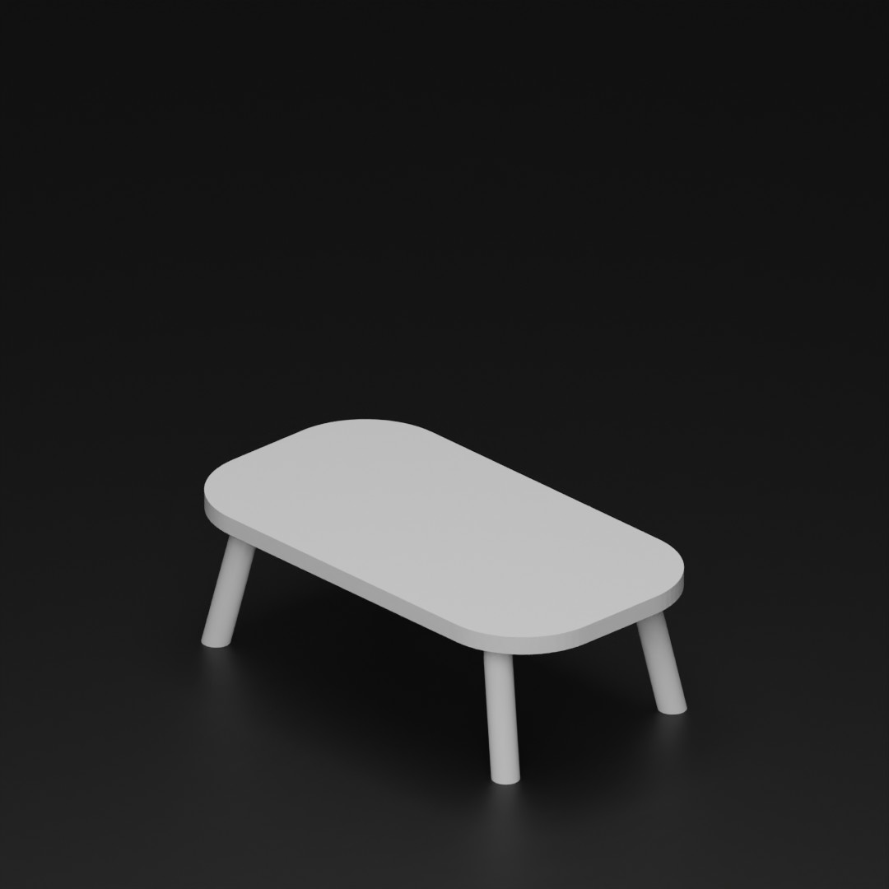

<!DOCTYPE html>
<html lang="en" style="font-size:16px ;">
<head>
    <meta charset="UTF-8">
    <meta http-equiv="X-UA-Compatible" content="IE=edge">
    <meta name="viewport" content="width=device-width, initial-scale=1.0">
    <title>Document</title>

    <style>
        body{
            margin: 0;
        }
        .flex {
            display:flex ;
            justify-content: center;
            align-items: center;
            width: 100%;
            height: 100vh;
            margin: auto;
        }
        .main{
            display:flex ;
            justify-content: center;
            height: fit-content;
        }
        .left {
            display: flex;
            flex-direction: column;
            justify-content: center;
            margin: 2rem;
        }
        .sm{   
            margin-top: 2rem;
            margin-bottom: 2rem;
        }
        .image{

        }
        .triangle {
        height: auto;
        width: 200px; 
        height: 200px; 
        position: relative;
        background-color: gray;
        }
        #dot{
            margin: 0px;
            height: 0px;
            width: 0px;
            border-radius: 50%;
            position: absolute;
            left: 184px;
            top: 184px;
            border: 0.5rem solid black;
        }

    </style>

</head>
<body onload="init()"   style="background-color:#F1F1F1 ;">
<!-- <div  >Teachable Machine Pose Model</div> -->
<!--     <button type="button" onclick="init()">Start</button> -->
<section class="flex">
    <div class="main" style="background-color:#FFFFFF ;border-radius: 1rem;">  
        <div class="left margin">
            <div id="webcam" class="sm">
                <canvas id="canvas"></canvas>
                <!-- <canvas id="canvas" width="200" height="200"></canvas> test  -->
            </div>
            
            <div class="triangle sm"> 
                <div id="dot"></div>
            </div>
            <div id="label-container">
            </div>
        </div>
    

        <div class="image">
            
            <!--  -->
        </div>
    </div>

    
    
</section>


<script src="https://cdn.jsdelivr.net/npm/@tensorflow/tfjs@1.3.1/dist/tf.min.js"></script>
<script src="https://cdn.jsdelivr.net/npm/@teachablemachine/pose@0.8/dist/teachablemachine-pose.min.js"></script>
<script type="text/javascript">
    // More API functions here:
    // https://github.com/googlecreativelab/teachablemachine-community/tree/master/libraries/pose

    // the link to your model provided by Teachable Machine export panel
    const URL = "./my_model/";
    let model, webcam, ctx, labelContainer, maxPredictions, test;
        // Image inputter 8===D
    let testImage = document.getElementById("test-image");
        // Rounder to intervals
        // OG CODE
    //     function round(number, increment, offset) {
    // return Math.round((number - offset) / increment ) * increment + offset;
    // }
    function round(number) {
        let interval = 5
        return Math.round((number) / interval ) * interval;
    }
    // Make sure rounding addds up to 100. Replace all math.round with new round by 20 increment
    const round_to_100 = (arr) => {
    let output = [];
    let acc = 0;

    for(let i = 0; i < arr.length; i++) {
        let roundedCur = round(arr[i]);
        const currentAcc = acc;
        if (acc == 0) {
            output.push(roundedCur);
            acc += arr[i];
            continue;
        }
        acc += arr[i];
        output.push(round(acc) - round(currentAcc));
    }

    return output;
    }
    let a,b,c,d,abcd,mix;
    // Tester
        //  a = 80;
        //  b = 16;
        //  c = 5;
        //  abcd = [a,b,c]
        //  mix = round_to_100(abcd)
        //  console.log(mix.join('-')+'.jpg');
    
    // Teachable machine thing
    async function init() {
        const modelURL = URL + "model.json";
        const metadataURL = URL + "metadata.json";

        // load the model and metadata
        // Refer to tmImage.loadFromFiles() in the API to support files from a file picker
        // Note: the pose library adds a tmPose object to your window (window.tmPose)
        model = await tmPose.load(modelURL, metadataURL);
        maxPredictions = model.getTotalClasses();

        // Convenience function to setup a webcam
        const size = 200;
        const flip = true; // whether to flip the webcam
        webcam = new tmPose.Webcam(size, size, flip); // width, height, flip
        await webcam.setup(); // request access to the webcam
        await webcam.play();
        window.requestAnimationFrame(loop);

        // append/get elements to the DOM
        const canvas = document.getElementById("canvas");
        canvas.width = size; canvas.height = size;
        ctx = canvas.getContext("2d");
        labelContainer = document.getElementById("label-container");
        for (let i = 0; i < maxPredictions; i++) { // and class labels
            labelContainer.appendChild(document.createElement("div"));
        }
        test = document.getElementById("test");
        for (let i = 0; i < maxPredictions; i++) { // and class labels
            test.appendChild(document.createElement("div"));
        }
    }

    async function loop(timestamp) {
        webcam.update(); // update the webcam frame
        await predict();
        window.requestAnimationFrame(loop);
    }

    async function predict() {
        // Prediction #1: run input through posenet
        // estimatePose can take in an image, video or canvas html element
        const { pose, posenetOutput } = await model.estimatePose(webcam.canvas);
        // Prediction 2: run input through teachable machine classification model
        const prediction = await model.predict(posenetOutput);
         for (let i = 0; i < maxPredictions; i++) {
            const classPrediction =
                prediction[i].className + ": " + prediction[i].probability.toFixed(2);
            labelContainer.childNodes[i].innerHTML = classPrediction;
            }
            // MY OWN INPUT
        //  if(prediction[0].probability.toFixed(2) > prediction[1].probability.toFixed(2)){
        //         test.childNodes[0].innerHTML = "zero";
        //         testImage.src ="../image/1.jpg";
        //     } else if (prediction[0].probability.toFixed(2) < prediction[1].probability.toFixed(2)){
        //         test.childNodes[0].innerHTML = "one"
        //         testImage.src = "./image/10.jpg"
        //     } else {
        //         test.childNodes[0].innerHTML = "I dont Know What to do "
        //     }
        // Out way of outputting unit
        // if(prediction[0].probability.toFixed(2) > 0.9){
        //     testImage.src ="../image/10.jpg";
        // } else if (prediction[0].probability.toFixed(2) > 0.8){
        //     testImage.src ="../image/9.jpg";
        // } else if (prediction[0].probability.toFixed(2) > 0.7){
        //     testImage.src ="../image/8.jpg";
        // } else if (prediction[0].probability.toFixed(2) > 0.6){
        //     testImage.src ="../image/7.jpg";
        // } else if (prediction[0].probability.toFixed(2) > 0.5){
        //     testImage.src ="../image/6.jpg";
        // } else if (prediction[0].probability.toFixed(2) > 0.4){
        //     testImage.src ="../image/5.jpg";
        // } else if (prediction[0].probability.toFixed(2) > 0.3){
        //     testImage.src ="../image/4.jpg";
        // } else if (prediction[0].probability.toFixed(2) > 0.2){
        //     testImage.src ="../image/3.jpg";
        // } else if (prediction[0].probability.toFixed(2) > 0.1){
        //     testImage.src ="../image/2.jpg";
        // } else if (prediction[0].probability.toFixed(2) >= 0){
        //     testImage.src ="../image/1.jpg";
        // }else {
        //         testImage.src ="";
        //     }
        // A new way to display image
         a = prediction[0].probability.toFixed(2)*100;
         b = prediction[1].probability.toFixed(2)*100;
         c = prediction[2].probability.toFixed(2)*100;
         abcd = [a,b,c]
         mix = round_to_100(abcd)
         console.log(mix.join('-')+'.jpg')
         testImage.src = '../image/'+mix.join('-')+'.jpg'

        // finally draw the poses
        drawPose(pose);
    }

    

    function drawPose(pose) {
        if (webcam.canvas) {
            ctx.drawImage(webcam.canvas, 0, 0);
            // draw the keypoints and skeleton
            if (pose) {
                const minPartConfidence = 0.5;
                tmPose.drawKeypoints(pose.keypoints, minPartConfidence, ctx);
                tmPose.drawSkeleton(pose.keypoints, minPartConfidence, ctx);
            }
        }
    }
</script>

</body>
</html>